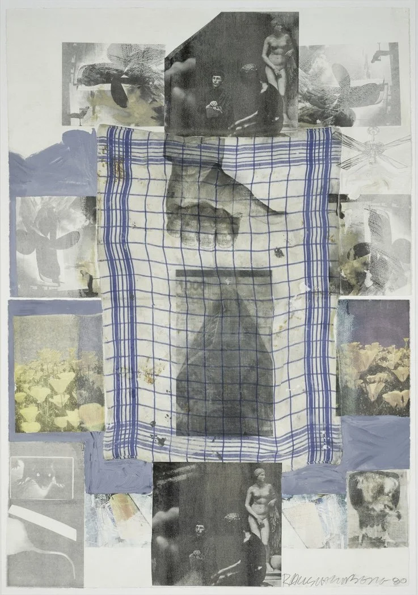
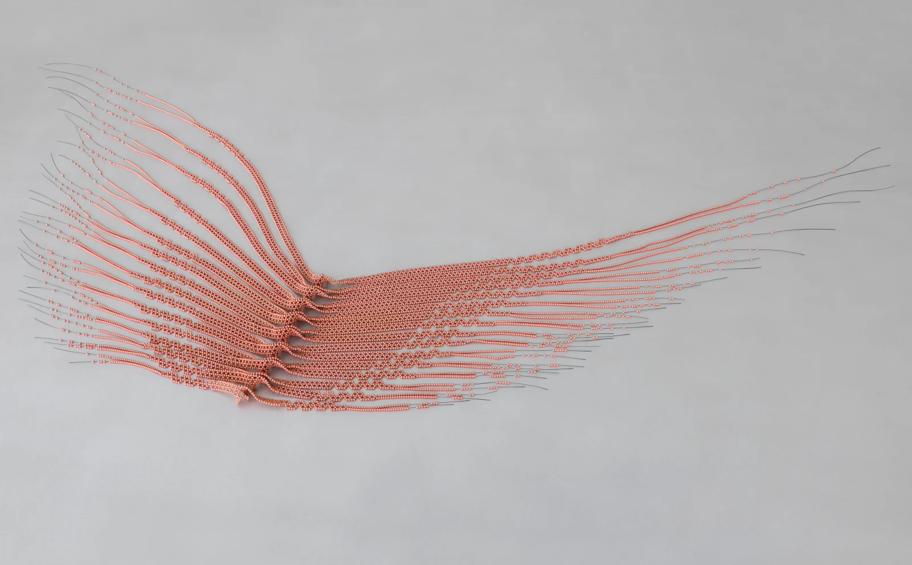

🎨 Digital Manipulation
Moving Elements & Displacement
What You Will Learn
HOMEWORK
Make tape transfers
TASK 1
Move & fill tools
TASK 2
Selection tools
TASK 3
Patch & blend
TASK 4
Typography
QUIZ
Test yourself
What is This Workshop?
You will learn how to move and transform tape transfer elements in Photoshop for your fashion design projects, using tools like Content-Aware Move, Patch Tool, and Blend Modes.
- Reposition elements without leaving gaps
- Blend physical textures into digital layouts
- Fix rough edges and clean up scanned material
- Create professional, polished design sheets
Artist Inspiration
These contemporary artists use transfer techniques in their practice:



The Workshop Steps
Make tape transfer samples
Learn 4 Photoshop techniques
Create your A3 design sheet
Upload to Padlet
Do this before class. Bring your scanned files on the day.
📺 Watch This Video Before Class
Steps to Follow
Collect a variety of tapes to experiment with:
- Clear tape
- Matte tape
- Washi tape
- Masking tape
💡 Tip
- Only use laser prints — inkjet ink will not transfer
- Try different printed materials: text, images, textures
- Press tape firmly onto your printed image
- Rub well to transfer the ink
- Peel back slowly and place onto white paper
- Try different pressures and speeds when peeling
- Scan at 300 DPI or higher
- Save as JPEG or TIFF
- Make sure each sample is flat and clear
Think about how these transfers relate to your Term 2 project:
- Material textures — does the tape echo fabric textures?
- Layered design — how could transfers create depth?
- Text elements — could transferred text tell your story?
Homework Checklist ✓
Learn to reposition elements and fill backgrounds automatically.
📺 Content-Aware Move Tool Tutorial
Content-Aware Move Tool
- Press J to select the Content-Aware Move tool
- It shares a group with the Healing tools — click and hold to find it
- Draw loosely around the element you want to move
- Include a little space around the edges
- Click and drag your selection to the new position
- Release the mouse
Photoshop automatically fills the gap and blends the moved element into the background.
📺 Content-Aware Fill Tutorial
Content-Aware Fill
- Use the Magic Wand W or Lasso L to select the unwanted area
- Go to Edit → Content-Aware Fill
- Paint green over areas you want Photoshop to sample from
- Exclude areas that would look wrong in the fill
Click OK to apply. Deselect with Cmd/Ctrl + D.
Task 1 Checklist ✓
Use selection tools to isolate and move specific parts of your tape transfers.
- Cut out specific textures or shapes
- Copy elements from one layer to another
- Apply effects to only part of an image
Best for selecting shapes with straight edges:
- Press L then toggle to Polygonal Lasso
- Click points around the object edge
- Connect back to start to close the selection
- Copy: Cmd/Ctrl + C
- Paste: Cmd/Ctrl + V
Best for selecting similar coloured areas:
- Press W
- Set Tolerance to 20–40 in the Options bar
- Click on the area you want to select
- Shift + Click to add to selection
- Alt/Option + Click to subtract
💡 Tips for Fashion Design Work
- Use Polygonal Lasso for cutting tape transfers into geometric shapes
- Use Magic Wand to select white or light backgrounds quickly
- Hold Shift to add multiple areas to your selection
- Go to Select → Modify → Feather to soften selection edges
Task 2 Checklist ✓
Fix rough edges and blend your tape transfers into your layout.
📺 Blend Modes Tutorial
Using the Patch Tool
- Press J and toggle to the Patch Tool
- Make sure Source is selected in the Options bar
- Draw a selection around the rough edge or mark you want to fix
- Click and drag the selection to a clean area of the image to sample from
Release the mouse and Photoshop blends the two areas together seamlessly.
Blend Modes
Change the Blend Mode of your tape transfer layer to integrate it with the background:
- Multiply — darkens, great for integrating transfers onto white or light backgrounds
- Screen — lightens, useful for layering light textures
- Overlay — increases contrast, makes textures pop
- Soft Light — gentle contrast, good for subtle layering
💡 Dodge Tool for Highlights
- Select the Dodge tool with O
- Set Range to Midtones, Exposure to 20–30%
- Paint over areas you want to lighten gently
Task 3 Checklist ✓
Add text to your design sheet that supports — not competes with — your images.
- Titles — Page or section headings
- Labels — Names for images and materials
- Annotations — Short technical notes
- References — Artist citations and sources
Recommended Fonts
Aim: Text should feel professional and balanced — it should support your images, not compete with them.
Recommended Options
💡 Typography Tips
- Keep text size modest: 9–14pt is usually enough for A3 print layouts
- Use consistent alignment — left-aligned or lightly centred text often works best
- Avoid placing text directly over busy image areas — give it breathing room
- Avoid overly decorative typefaces that fight with your imagery
- Good typography tells the story quietly
Task 4 Checklist ✓
Submit Your Work
Upload to Padlet
All work must connect to your Term 2 design project.
1. Tape Transfers
At least 3 scanned samples showing different tapes and textures
2. A3 Design Sheet
At least 2 techniques, good typography, and connection to your project
What You Learned Today
- Moved elements using Content-Aware Move
- Filled backgrounds with Content-Aware Fill
- Selected and cut with Polygonal Lasso and Magic Wand
- Fixed edges with the Patch Tool and Blend Modes
- Added professional typography to a design sheet
Check what you have learned today.
Part 1: Put the Steps in Order
Drag and drop the Content-Aware Move steps into the correct order:
↓ Drop steps here in the correct order